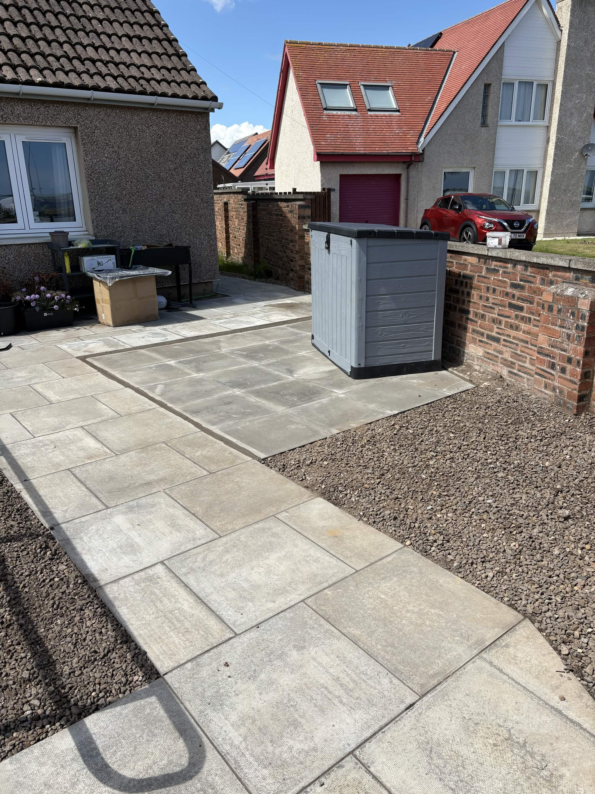
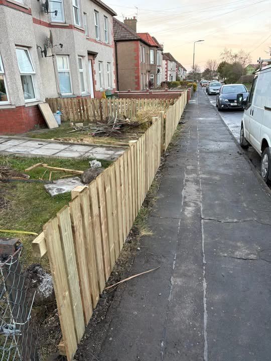

Before

After

Floor Tiling
Showing the transformation from worn flooring to a polished finish.
Before

After

Hedge Trimming
Neat and tidy garden edges after a full trim.
Before

After

Freshly Cut Lawn
Lawn maintenance that brings the garden back to life.
Before

After

Pathing
Clean, durable paths created to improve access and style.
Before

After

Garden Improvement
Thoughtful upgrades that make outdoor spaces more inviting.
Before

After

Fencing
New fencing that adds privacy, structure, and curb appeal.